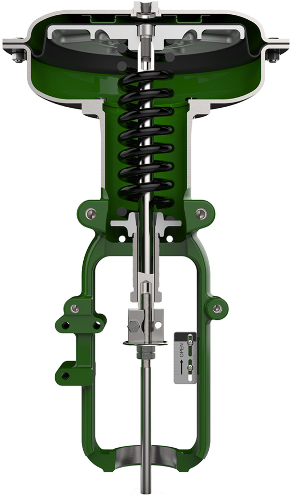
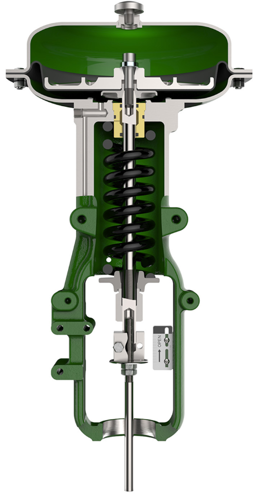

Direct- and Reverse-Acting Actuators  Direct-acting · Fisher 657air drives the stem down — fails up on air loss  Reverse-acting · Fisher 667air drives the stem up — fails down on air loss Action = which way the spring drives the stem when instrument air is lost. 1